- 1. Roundup
- 2. Topic
- 3. Producer
- 4. Consumer
- 5. Group and Offset
- 6. Broker
- 7. Topic Replication
- 8. Zookeeper
- 9. KRaft Mode
- 10. Topic
- 11. Partition
- 12. Offset
- 13. Producer
- 14. Producer Message key
- 15. Message Serializer
- 16. Message Key Hashing
- 17. Consumer
- 18. Consumer Deserializer
- 19. Consumer Group
- 20. Consumer Inactive
- 21. Topic Consumer Relationship
- 22. Consumer Offset
- 23. Consumer Delivery Semantic
- 24. Kafka Broker
- 25. Broker and Topic
- 26. Broker Discovery
- 27. Topic Replication Factor
- 28. Partition Leader Concept
- 29. Default Behavior
- 30. Consumer Replica Fetching
- 31. Producer Ack
- 32. Topic Durability
- 33. Zookeeper
- 34. Kafka KRaft
2. Topic
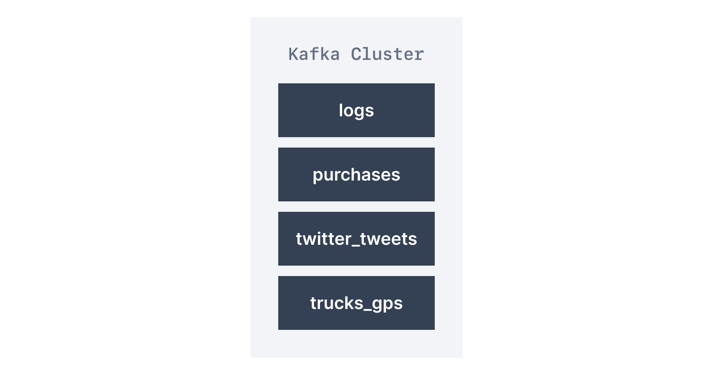
-
与数据库使用表来组织和分割数据集类似，Kafka使用主题来组织消息；
-
主题通过名称来识别，如日志主题，其中可能包含应用程序的日志消息，
而订单主题可能包含应用程序的订单数据； -
主题由名称标识(identify by topic name)，消息格式(msg format)
可为任何类型；消息的序列(msg sequence)称为数据流(data stream)； -
与数据库表不同，主题不可查询queryable，必须创建生产者来向主题发送数据，
而消费者则按顺序从主题中读取数据(read data from topic in order)； -
主题中数据默认存储一周(也成为默认消息保留期，可配置，default msg retention period)；
-
此删除旧数据的机制确保kafka集群不会随时间推移，回收主题而耗尽磁盘；
run out of disk space by recycling topic over time； -
kafka中的主题不可变(immutable，immutability)，一旦数据写入分区，则无法更改；

11. Partition
-
主题可拆分成分区(split in partition)，如1000个分区，每个主题可有任意多个分区；
-
除非提供key，否则数据将随机分配给分区(assign randomly to partition)；
-
数据只保存有限的时间，默认一周，此选项可配置；
-
每个分区中的消息都按顺序(order)排列，
-
只有在一个分区内，而不是跨分区(across partition)，才能保证顺序(order)；
12. Offset
-
分区中每条消息都获得一个增量Id(incremental id),称为偏移量(offset)；
-
偏移量只对特定分区有意义，如分区A中偏移量3，不表示与分区B中偏移量3是相同数据；
-
即便删除以前的消息，偏移量也不会重复使用；
13. Producer
-
生产者将数据写入主题(由分区组成)，生产者知道要写入哪个分区(及Kafka代理拥有它)；
-
若kafka broker failure，生产者将自动恢复(automatically recover)；
14. Producer Message key


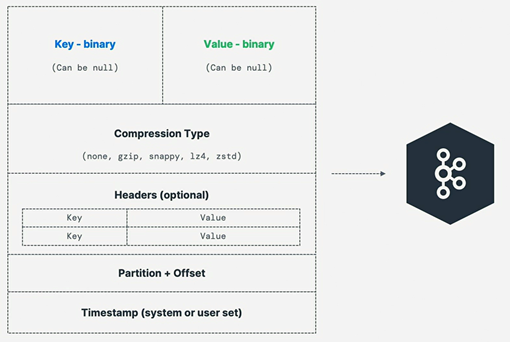
-
生产者可选择发送带有key的消息(String,Number,Binary等)；
-
若key = null，则循环发送数据(分区1，分区2，分区3……)；
-
若key != null，则该键的所有消息将始终转到同一partition(hashing)；
-
若需对特定字段(如product_id)进行消息排序，则通常会发送key；
15. Message Serializer
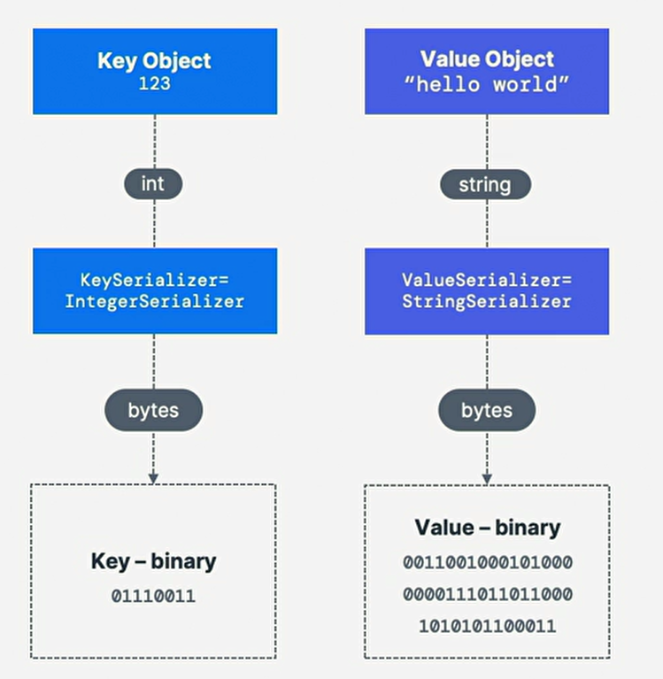
-
kafka只接受来自生产者的字节(byte)输入，并将字节作为输出发送给消费者；
-
消息序列化(serialization)意味着将对象/数据转换为(transforming into)字节；
-
序列化用于消息的key和value，常用序列化器(serializer)有：
String(包括Json)，Int，Float，Avro，Protocol Buffer；
16. Message Key Hashing

-
kafka分区器(partitioner)是代码逻辑，它获取记录并确定将其发送到哪个分区；
-
Key Hashing是确定key到分区映射的过程，
在默认的partitioner中，使用murmur2算法对key进行hash； -
targetPartition = Math.abs(Utils.murmur2(keyBytes)) % (numPartitions - 1)
17. Consumer

-
消费者从主题(通过名称标识)读取数据：拉取模型(pull model)；
-
消费者自动(automatically)知道要从哪个broker读取信息；
-
若代理发生故障(in case of broker failure)，消费者知道如何恢复(recover)；
-
每个分区内的数据按偏移量从低到高的顺序读取(read in order)；
18. Consumer Deserializer
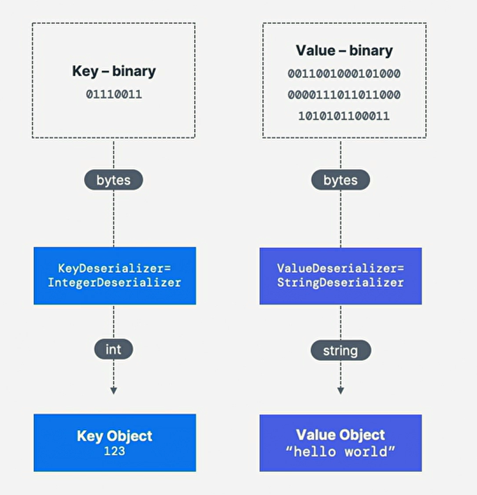
-
反序列化(deserialize)是将字节转换为对象/数据(object/data)；
-
用于消息的key和value，常用的反序列化器(deserializer)：
String(包括Json)，Int，Float，Avro，Protocol Buffer； -
序列化和反序列化类型在主题生命周期内不得更改，而是创建新主题；
-
serialization/deserialization type must not change
during topic lifecycle，create new topic instead；


22. Consumer Offset
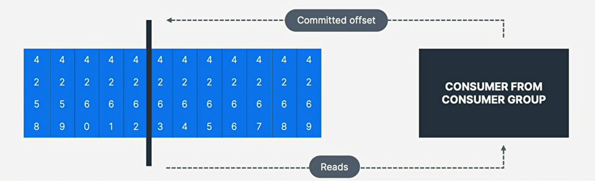
-
kafka存储消费者组已读取的偏移量，
store offset at consumer group has been reading； -
提交的(commit)偏移量位于名为 __consumer_offsets 的主题中；
-
当组中消费者处理(process)完从kafka收到的数据时，它应定期提交偏移量，
kafka broker将写入 __consumer_offsets ，而不是组本身； -
periodically committing offset，kafka broker
write to __consumer_offsets,not group itself； -
若消费者死亡(die)，因提交的消费者偏移量，它将能够从上次停止的位置读回；
-
able to read back from where it left off
thanks to committed consumer offset
23. Consumer Delivery Semantic
24. Kafka Broker
-
kafka集群由多个broker(server)组成(is composed of)；
-
每个broker由其Id(整数)标识；
-
每个broker都包含一定的主题分区(certain topic partition)；
-
连接到任何broker(称为bootstrap broker)后，将连接到整个集群
(entire cluster)，kafka客户端有智能机制(smart mechanic)； -
开始时最好的数量是3个broker，但一些大型集群超过100个集群；

26. Broker Discovery

-
每个kafka broker也成为bootstrap server；
-
即意味着我们只需连接到一个broker；
-
kafka客户端将知道如何连接到整个集群(智能客户端)；
-
每个broker都了解所有broker，topic和partition(metadata元数据)；
27. Topic Replication Factor
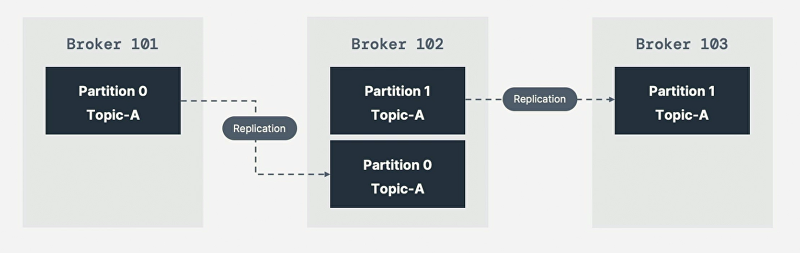
-
主题的复制因子(replication factor)应该大于1，通常在2和3之间；
-
这样某broker发生故障(down)，另一个代理可提供数据(serve data)；
-
如具有2个分区，且复制因子为2的主题A；
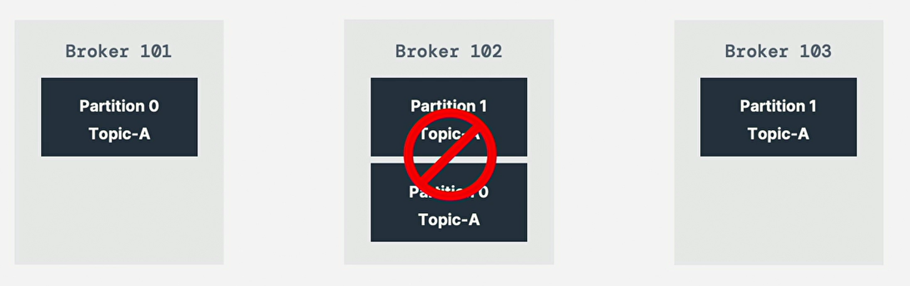
-
我们失去(lose) broker 102，结果：broker101和103仍然可提供数据；
28. Partition Leader Concept
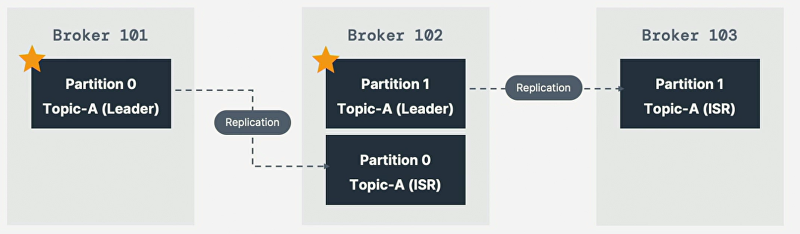
-
在任何时候，只有一个broker可成为给定分区的领导者；
-
生产者智能想分区领导者发送数据，其它broker将复制(replicate)数据；
-
故每个分区有一个领导者和多个ISR(同步副本，in-sync replica)；
29. Default Behavior
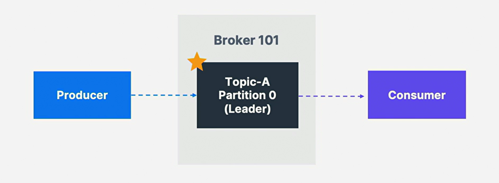
-
领导者的默认生产者和消费者行为，
default producer and consumer behavior with leader -
producer只能向分区的Leader Broker写入数据；
-
默认：Consumer将从Leader Broker中读取分区信息；
30. Consumer Replica Fetching
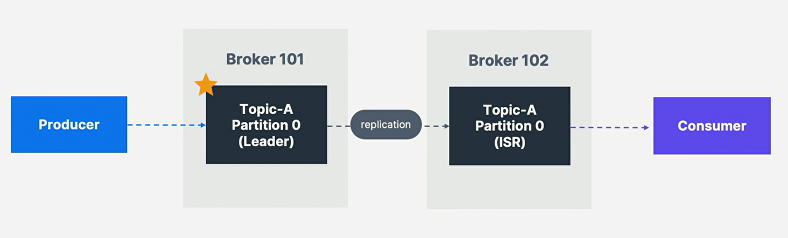
-
可将消费者配置为从最近的副本读取，
configure consumer to read from closest replica； -
若使用云，有助于improve latency，并降低网络成本；
31. Producer Ack
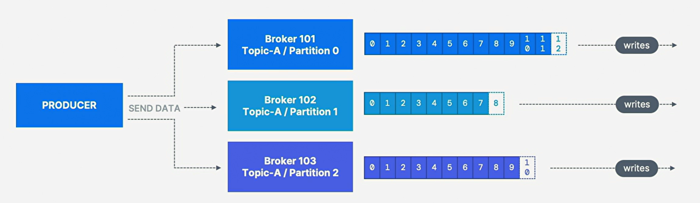
-
生产者可选择接受数据写入的确认；
choose to receive acknowledgment of data write；
| Type | Memo |
|---|---|
acks=0 |
生产者不会等待确认(可能数据丢失) |
acks=1 |
生产者将等待领导者确认(有限的数据丢失) |
acks=all |
Leader + Replica确认(无数据丢失) |
32. Topic Durability
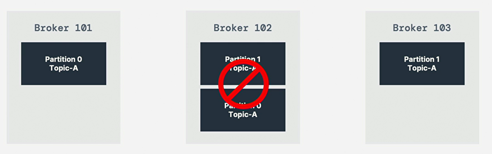
-
对主题复制因子(replication factor)为3的情况，
主题数据持久性(topic data durability)可承受(withstand)2个broker丢失(loss)； -
通常，对N的复制因子，可永久丢失最多(permanently lose up to)
(N - 1)个broker，但仍然可恢复数据；
33. Zookeeper
-
Zookeeper管理broker(保存broker列表)；
-
Zookeeper帮助执行分区的领导者选举，
performing leader election for partition； -
Zookeeper向Kafka发送通知(notification)，以应对发生变化(in case of change)，
如：new topic，broker die，broker come up，delete topic等； -
Kafka 3.X可使用Kafka Raft代替Zookeeper，Kafka 4.X将删除Zookeepr；
-
Zookeeper设计为与奇数(odd)数量的服务器(如1，3，5，7……)一起运行；
-
Zookeeper有个领导者leader(write)，其余服务器是follower(read)；
-
Zookeeper不存储消费者偏移量(consumer offset)；
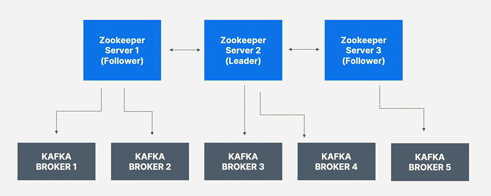
-
Zookeeper安全性也弱于Kafka，另勿使用Zookeeper
作为Kafka客户端或连接到Kafka的其它程序的配置中心；